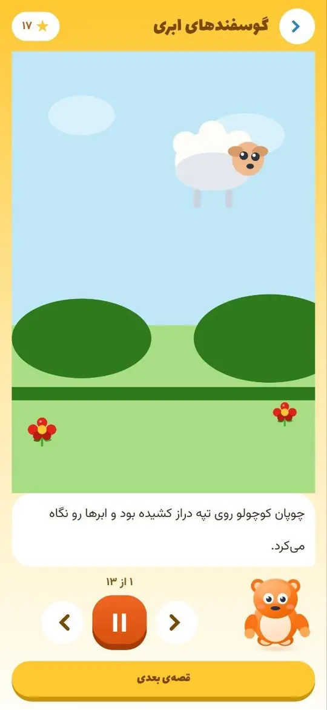

زمان صفحهنمایش کودک: سازمان جهانی بهداشت چه میگوید؟
خلاصهی رهنمود سازمان جهانی بهداشت دربارهی صفحهنمایش کودکان زیر ۵ سال، و چند راه ساده برای اینکه گوشی جای بازی و حرکت را نگیرد.
نقاشیات روی کاغذ، جان میگیرد
روی کاغذ واقعی نقاشی بکش، با دوربین اسکن کن و ببین کنار پشمک زنده میشود.

پشمک یک بازی نقاشی است که کاغذ و گوشی را به هم وصل میکند. کودک روی کاغذ واقعی نقاشی میکشد، با دوربین گوشی اسکنش میکند و نقاشیاش کنار شخصیت پشمک زنده میشود.
در اپ ماموریتهای نقاشی هست، مثل ساختن اتاق خواب پشمک روی کاغذ. رنگآمیزی، ردگیری شکلها، بازی حافظه و گالری هم کنارشان است و دنیای بازی پشمک همه را کنار هم جمع میکند.
بخش لالایی شبانه هم دارد تا آخر روز با آرامش تمام شود.
نقاشی روی کاغذ را با دوربین بگیرید تا وارد دنیای پشمک شود.
هر ماموریت میگوید چه چیزی را روی کاغذ بکشید.
صفحههای رنگآمیزی و ردگیری برای دستورزی و دقت.
آهنگهای آرام برای پایان روز.
ببینید اپ در عمل چطور کار میکند.
یک انیمیشن کوتاه از شخصیت پشمک.
از انتخاب ماموریت تا نقاشی و اسکن.
روی هر تصویر بزنید تا بزرگ ببینید.
نظرهای واقعی کاربران را در صفحهی پشمک در کافهبازار بخوانید. ما نظری از خودمان اینجا نمیگذاریم.
اگر از پشمک استفاده کردهاید، نظر شما به والدین دیگر کمک میکند.
یک کاغذ، مداد یا ماژیک و گوشی با دوربین. اپ توضیح میدهد در هر ماموریت چه چیزی بکشید.
برای کودکان ۳ تا ۸ ساله ساخته شده است.
نه، تبلیغات مزاحم ندارد.
خلاصهی رهنمود سازمان جهانی بهداشت دربارهی صفحهنمایش کودکان زیر ۵ سال، و چند راه ساده برای اینکه گوشی جای بازی و حرکت را نگیرد.
پنج بازی بدون وسیله برای تمرین شنیدن و تمرکز کودک: حدس صدا، ترتیب صداها، ریتم و صدای مخفی. مناسب ۳ تا ۸ سال.
بازی صداها؛ تمرین شنیدن و تمرکز
کودک صدای حیوانها، وسایل خانه، طبیعت و موسیقی را میشنود، حدس میزند و ماموریتهای شنیداری را یکییکی کامل میکند.
فارسی سوم دبستان با جغد معلم
هر صفحهی کتاب یک درس صوتی دارد؛ با آزمون و کاربرگ در سه سطح.
یک باغ تازه میآید
بازی ساختن و کشف با روباه کوچولو.
از کافهبازار بگیرید و ده دقیقه خودتان هم بازی کنید.